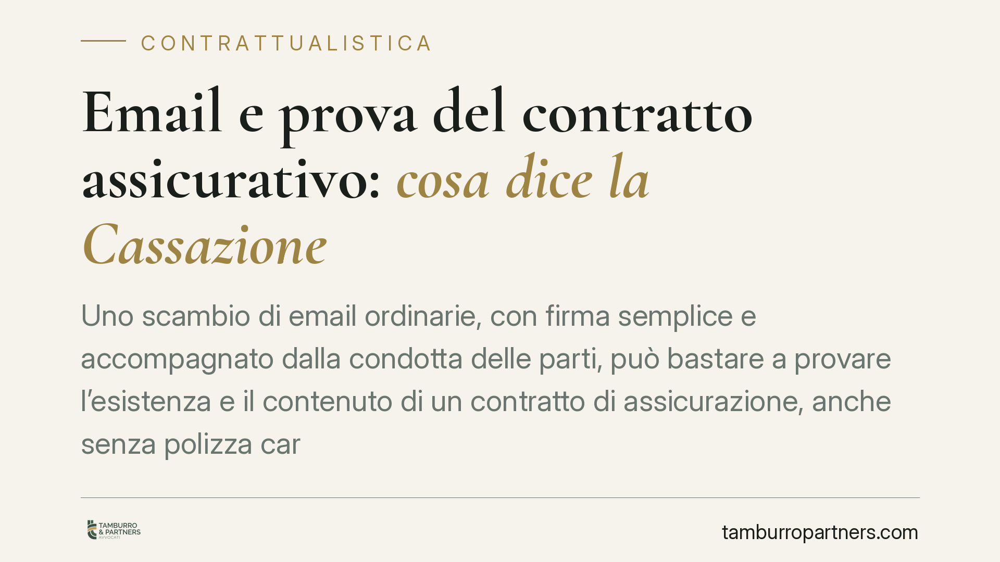

Email e prova del contratto assicurativo: cosa dice la Cassazione
Uno scambio di email ordinarie, con firma semplice e accompagnato dalla condotta delle parti, può bastare a provare l'esistenza e il contenuto di un contratto di assicurazione, anche senza polizza cartacea firmata. Un orientamento recente della Cassazione chiarisce il punto e riguarda, oltre alle assicurazioni, tutta la contrattualistica a forma libera. Vediamo perché conta.

Il caso in sintesi
Un contenzioso tra una compagnia assicurativa e una società di trasporti ha riproposto una questione ricorrente: quando manca la firma sulla polizza cartacea, il contratto esiste comunque?
Secondo un orientamento recente della Corte di Cassazione, la risposta può essere affermativa. Lo scambio di email ordinarie, con firma semplice (cioè il nome digitato o l'indirizzo mittente, senza firma digitale qualificata), unito al comportamento concreto delle parti, è idoneo a dimostrare che un accordo è stato raggiunto e a chiarirne il contenuto.
*Nota redazionale: gli estremi puntuali delle pronunce citate come fonte sono in corso di verifica prima della pubblicazione definitiva; il principio esposto riflette l'indirizzo interpretativo consolidato.*
Inquadramento normativo
Occorre tenere distinti due piani, spesso confusi.
Il primo è quello della forma. L'art. 1888 c.c. stabilisce che il contratto di assicurazione deve essere provato per iscritto. Si tratta di una forma ad probationem: la forma scritta non serve alla validità del contratto (che esiste anche senza), ma serve a poterlo dimostrare in giudizio. È diversa dalla forma ad substantiam, richiesta per esempio nella compravendita immobiliare, dove l'assenza dello scritto rende il contratto nullo. Nel contratto assicurativo, quindi, il difetto di forma incide solo sulla prova, non sull'esistenza dell'accordo.
Il secondo piano è quello del valore probatorio del documento informatico. Qui rileva l'art. 2712 c.c., secondo cui le riproduzioni informatiche formano piena prova dei fatti e delle cose rappresentate, a condizione che colui contro il quale sono prodotte non ne disconosca la conformità ai fatti. L'email ordinaria rientra tra queste riproduzioni.
I due piani vanno letti insieme ma non sovrapposti: l'art. 1888 c.c. dice che serve una prova scritta; l'art. 2712 c.c. spiega quale efficacia può avere, tra le prove scritte, la corrispondenza elettronica non firmata digitalmente.
Implicazioni pratiche
La conseguenza operativa è netta. Una compagnia, un'azienda o un professionista non possono sottrarsi a un impegno assunto via email sostenendo che "manca la firma sulla polizza". Se dal carteggio e dalla condotta successiva emerge un accordo, quello scambio può fondare la prova del contratto.
Attenzione però al meccanismo del disconoscimento. L'efficacia probatoria dell'email ai sensi dell'art. 2712 c.c. non è automatica: la parte contro cui il documento è prodotto può contestarne la conformità ai fatti rappresentati. Ma il disconoscimento deve essere specifico e tempestivo. Una contestazione generica, tardiva o meramente di stile non impedisce al giudice di utilizzare l'email come prova. Chi vuole difendersi deve indicare con precisione cosa contesta e perché.
Il principio, pur nato in materia assicurativa, ha portata più ampia. Vale per l'intera contrattualistica a forma libera: fornitura, prestazione di servizi, incarichi professionali, accordi commerciali. In tutti questi ambiti la corrispondenza elettronica quotidiana può cristallizzare obblighi vincolanti, anche quando le parti pensavano di essere ancora "in trattativa".
Cosa fare in concreto
- Verifica prima di inviare. Tratta ogni email che definisce prezzo, oggetto, condizioni e tempi come un documento potenzialmente vincolante, non come una comunicazione informale.
- Usa clausole di riserva. Quando l'accordo non è ancora definitivo, esplicitalo per iscritto (ad esempio: "proposta soggetta ad accettazione formale e sottoscrizione").
- Conserva l'intero carteggio. Archivia in modo ordinato messaggi, allegati e metadati: in caso di contestazione servono a ricostruire fatto e contenuto.
- Reagisci subito e in modo puntuale. Se ricevi un'email che ti attribuisce un impegno non assunto, contesta per iscritto in maniera specifica e senza ritardo, per non incorrere negli effetti dell'art. 2712 c.c.
- Distingui i canali. Per gli accordi rilevanti valuta l'uso della PEC o della firma digitale, che offrono maggiori garanzie rispetto all'email ordinaria.
In generale, consigliamo di non affidare la definizione dei rapporti contrattuali importanti alla sola corrispondenza informale: la certezza documentale riduce il contenzioso e chiarisce in anticipo la posizione di ciascuna parte.
---
Contributo informativo a cura di Tamburro & Partners Avvocati - Avv. Giuseppe Tamburro. Non costituisce parere legale.
Ogni contratto ha il suo equilibrio.
Se vuoi una revisione delle clausole o una redazione su misura, scrivi allo studio. Ti rispondiamo entro un giorno lavorativo.